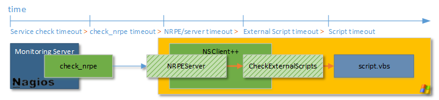

Navigation
- index
- next |
- previous |

- NSClient++ »
- 0.5.0
- Documentation »
NSCP has a built-in “test and debug” mode that you can activate with the following command
nscp test
What this does is two things. 1. it starts the daemon as “usual” with the same configuration and such. 2. it enables debug logging and logs to the console. This makes it quite easy to see what is going on and why things go wrong.
In general never use the ZIP installation unless you have a strong reason for doing so. The MSI is the preferred way to install NSCLient++ and will work much better then trying to manually install it.
- The first thing to check is the version. If you are using an old version (pre 0.4.2) upgrade! In 0.4.2 PDH was greatly improved and all core checks stopped using PDH which means that for “normal” checks you no longer need PDH.
- Second thing to check is whether the servers’ performance counters working? Sometimes the performance counters end up broken and need to be rebuilt there is a command to validate performance counters:
nscp sys --validate
For details: Microsoft KB: http://support.microsoft.com/kb/300956 essentially you need to use the “lodctr /R” command.
- Usually this is due to running more then once instance of NSClient++ or possibly running another program that uses the same port.
- Make sure you don’t have any other instance NSCLient++ started.
- Check if the port is in use (netstat -a look for LISTENING)
This is because you have one or more entries in your eventlog which are larger then the “default buffer size of 64k”. The best way to fix this is to increase the buffer used.
[/settings/eventlog]
buffer_size=128000
NOTICE System tray is currently disabled and will be added back at some point
This information is usually useless to me since the error in nagios is not related to the problem. This is due to most protocols supported by nagios does not support reporting errors only status. To see the error do the following:
net stop nscp
nscp test --log info
... wait for errors to be reported ...
exit
net start nscp
To get the debug log do the following:
net stop nscp
nscp test --log debug
... wait for errors to be reported ...
exit
net start nscp
Please check and include this information before you submit questions and/or bug reports.
Som people experience high CPU load when checking the event log this can usualy be resolved using the new command line option scan-range setting it to the time region you want to check
CheckEventLog ... scan-range=12h ...
This means something is wrong. To find out what is wrong you need to check the NSClient++ log file. The message means that an plugin returned an invalid exit code and there can be many reasons for this but most likely something is miss configured in NSClient++ or a script your using is not working. So the only way to diagnose this is to check the NSClient++ log.
One simple way to show the log is to run in test mode like so:
net stop nscp
nscp test
...
# wait for error here
...
exit
net start nscp
Note
But it is impossible to tell what is wrong without the NSClient++ log.
By default the log level is info which means to see debug messages you need to enable debug log:
[/settings/log]
file name = nsclient.log
level = debug
Dollar signs are “strange” in nagios nad has to be escaped using double $$s
Backslashes and som other control characters are handled by the shell in Nagios and thus escaped as such.
For details see External Scripts
If you get illegal metachars or similar errors you are sending characters which are considered harmful through NRPE. This is a security measure inherited from the regular NRPE client.
The following characters are considered harmful: |`&><’”\[]{} To work around this you have two options.
To enable this in the NRPE server you can add the following:
[/settings/NRPE/server]
allow nasty characters=true
[/settings/external scripts]
allow nasty characters=true
To not use nasty characters you can replace man y of them in built-in commands:
| Expression | Replacement |
|---|---|
| > | gt |
| < | lt |
| ‘..’ | str(...) |
| ${..} | %(..) |
please upgrade to 0.4.2 and see if the error still persist before you ask questions and/or report bugs. I generally do NOT fix issues in several years old versions.
A good idea to upgrade to 0.4.2 and see if the issue has been resolved but please report this anyway so I can (if possible) fir it for 0.4.1
Please ask in the forums and I will try to answer your question.
This is due to invalid configuration. One important thing you ‘’‘NEED’‘’ to configure is which hosts are allowed to connect. If this configuration is missing or invalid you will get the following error:
013-04-02 16:34:07: e:D:\source\nscp\trunk\include\check_nt/server/protocol.hpp:65: Rejected connection from: ::ffff:10.83.14.251
To resolve this please update your configuration:
[/settings/default]
; ALLOWED HOSTS - A coma separated list of hosts which are allowed to connect. You can use netmasks (/ syntax) or * to create ranges.
allowed hosts = <ADD YOUR NAGIOS 1 IP HERE>,<ADD YOUR NAGIOS 2 IP HERE>,10.11.12.0/24
Configuring timeouts can some times be a problem and cause strange errors. It is important to understand that timeouts are cascading this means if you have all timeouts set to 60 seconds they will all miss fire.
The nagios server timeout will fire after exactly 60 seconds but the script timeouts will be started m,aybe 1 second after the nagios service check timeout this means once we reach 60 seconds the nagios service timeout will fire first and 1 second after the script will timeout. This you always have to set each timeout slightly less to accomodate this drift.
If your command takes 60 seconds you need to set the timeouts like this:
[/settings/external scripts/wrappings]
vbs = cscript.exe //T:120 //NoLogo scripts\\lib\\wrapper.vbs %SCRIPT% %ARGS%
[/settings/external scripts]
timeout = 65
[settings/NPRE/server]
timeout = 70
check_nrpe -t 75
service_check_timeout=80
Rotating logfile can be done when size reaches a certain level (in this case 2048000 bytes):
[/settings/log]
date setting = %Y.%m.%d %H:%M:%S
file name = nsclient.log
level = info
[/settings/log/file]
max size = 2048000
In older version of NSClient++ (pre 0.4.1) there were only CheckFoo type commands so they where called CheckCPU CheckMem CheckProcess etc etc... In 0.4.2 we introduced a new set of commands which were more generic and similar and they are called check_cpu check_memory check_process etc etc.. The previous ones are only for compatibility and will eventually be removed from NSClient++. Currently they are about 90% compatible which means some things will not work as before and some commands are not even present anymore. I personally think that the benefit of using the new commands makes the effort required to convert it worth it but if you have a specific command using the old syntax which no longer work please do let me know and I will see about adding support for it.
Check_nt is NOT a good protocol and is considerd abandoneware. NSClient++ supports it only for legacy reasons. There is generally no reason to use check_nt
No it does not :) MEMUSE reports physical+page (normally called commited bytes). This is the amount of memory the system has promised to various applications. Thus it will be “more” than your RAM if you want to check physical memory please use check_nrpe and check_memory instead.
Yes, but it requires NSClient++ 0.4.2 and later.
This is a “feature” of the Windows Eventlog API. They have something called severity which most programs do not use as severity. instead please try using level which is more accurate.
The NRPE protocol is broken it is using some strange encryption protocols which are (to our knowledge) rather insecure. To work around this in 0.4.x we introduced real SSL support as well as certificate based authentication. This became the default in 0.4.3.
To allow old “legacy” check_nrpe connect to NSClient++ you need to enable insecure mode which can be done in multiple ways.
# In the MSI installer there is an option to select insecure mode # From command line you can run the “nscp nrpe install –insecure” # You can manually set the option in your config file
All these options will result in the following configuration:
[/settings/NRPE/server]
certificate key =
certificate = ${certificate-path}/certificate.pem
ssl options =
allowed ciphers = ADH
ssl = true
insecure = true
If you instead opt to use the more secure standard SSL aproach used in NSClient++ you can easily install NSClient++ on a linux system as well.